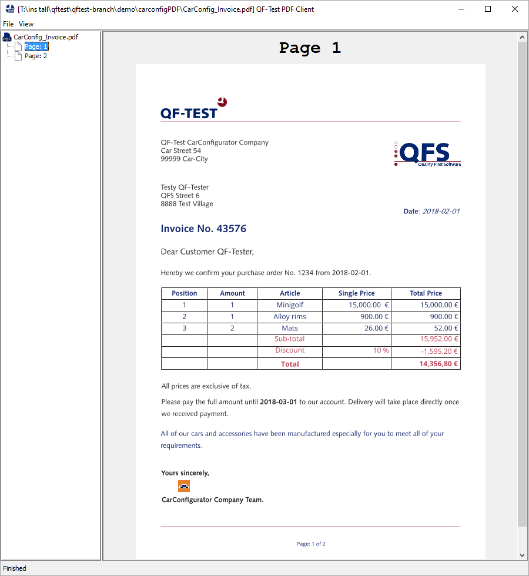
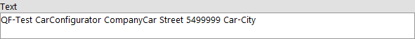
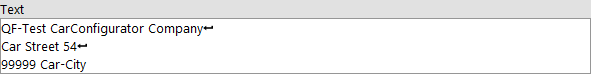
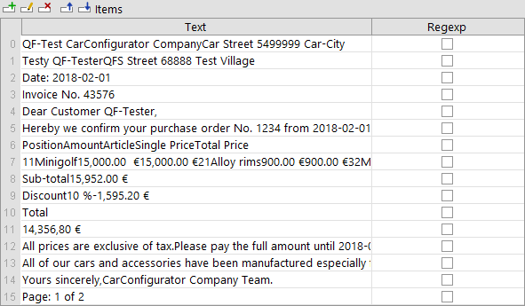
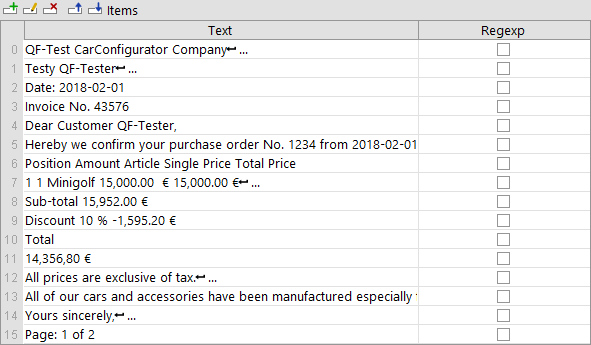
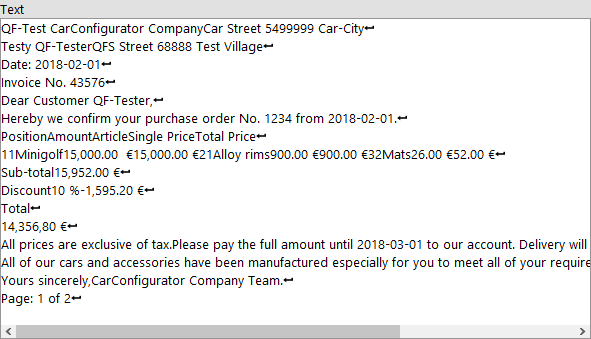
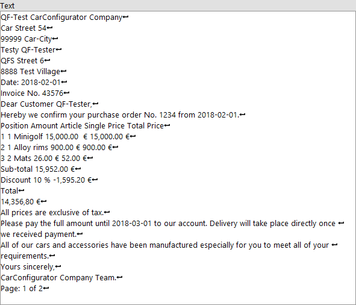
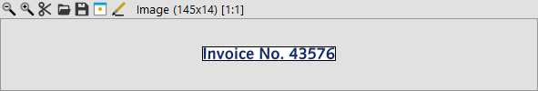
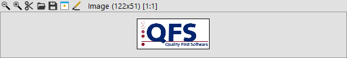
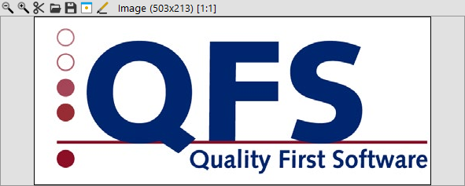

| Version 6.0.3 |
From version 4.2 onwards QF-Test offers the possibility to test PDF documents
similarly to GUIs, i.e. QF-Test analyzes the structure of a PDF document and
recognizes single components, which can be tested individually.
Using Capture and replay QF-Test can directly record and replay
Events as well as Checks.
 Video: 'Testing PDF Documents
with QF-Test'.
Video: 'Testing PDF Documents
with QF-Test'.
QF-Test loads the PDF document to be tested into a viewer, which QF-Test starts as a client process.
The Quickstart Wizard allows to create a setup sequence to start the PDF client. Please choose "PDF document" as Type of Application. (c.f. chapter 3). This allows to start the viewer. The node 'Start PDF client' is used as start node.
The left side of the window of the PDF Client displays a column with an overview of all
pages of the PDF document.
The right part of the window shows the currently selected page.
The following screenshot shows the PDF Client with a demo PDF document.
|
|  | ||
|
| Figure 16.1: PDF Client main window with PDF document | ||
To change the opened document during test execution or the shown page you may use a 'Selection' step. These actions can be recorded directly in the recording mode. The following events can be replayed:
You can load another PDF document during the test execution.
To do so you have to set the
Detail attribute of the
'Selection' step
to open: .
Now you can set the path to the PDF document. If a relative path is specified it is resolved relatively to the directory containing the current test-suite.
|
|
|
|||
|
| Example 16.1: Loading a PDF document | |||
If the document cannot be found or opened a TestException will be thrown.
To switch to a specific page the
Detail attribute of the
'Selection' step
can be set to goto:.
Just like the Page of PDF Document attribute, the page can either be set as an integer to set the page number or a string in quotation marks for the page name.
|
|
|
|||
|
| Example 16.2: Open a specific page | |||
If the desired page cannot be determined, a PageNotFoundException will be thrown.
The following checks exist for PDF components (c.f. section 16.4). These checks can be directly recorded via the Check recording mode.
For a description of the 'Check text' node please refer to 'Check text'. There are two check types available for PDF text components: 'default' and 'Text positioned'.
PDF documents do not necessarily contain line breaks, and spaces. The spaces between words and rows result from the coordinates of the single letters. The check type 'default' checks the text as it is represented in the PDF document - without line breaks and spaces when the text object does not contain any. From the coordinates of the single letters QF-Test calculates where there should be line breaks and spaces. The check type 'Text positioned' checks this processed text.
|
|  | ||
|
| Figure 16.2: Check text 'default' | ||
|
|  | ||
|
| Figure 16.3: Check text 'Text positioned' | ||
4.4+
Additionally the whole text of the current page can be checked with the check types
"Text (whole page)", "Text positioned (whole page)", "Text as items (whole page)" and "Text positioned as items (whole page)"
available at the Main stage.
These check types record all Text components of the current page sorted by their Y/X position. The check types differ between
recording the Text components positioned/processed (see above) or not and whether they are recorded
as 'Check items' or as combined 'Check text'.
|
|  | ||
|
| Figure 16.4: Check Items 'Text as items (whole page)' | ||
|
|  | ||
|
| Figure 16.5: Check Items 'Text positioned as items (whole page)' | ||
|
|  | ||
|
| Figure 16.6: Check text 'Text (whole page)' | ||
|
|  | ||
|
| Figure 16.7: Check text 'Text positioned (whole page)' | ||
For a description of the 'Check image' node please refer to 'Check image'. The check type 'default' is provided for all PDF object types.
The check type 'default' checks the object as it is displayed on the PDF page, with scaling and with overlapping objects or parts of objects.
|
|  | ||
|
| Figure 16.8: Check Image 'default' recording of a Text object | ||
|
|  | ||
|
| Figure 16.9: Check Image 'default' recording of an Image object | ||
In a PDF document there may also be real embedded images. The images can be scaled for display on the PDF page. Moreover, other objects may overlap the image on the displayed page. For these Images the following check types are also available:
The check type 'unscaled' checks the original unscaled image embedded into the file.
|
|  | ||
|
| Figure 16.10: Check Image 'unscaled' recording of an Image object | ||
The check type 'scaled' checks the image displayed on the PDF page without overlapping objects, however, taking into account scaling. This allows to check partly invisible images.
|
| |||
|
| Figure 16.11: Check Image 'scaled' recording of an Image object | ||
The 'Check text' node with the check type 'text_font' allows to check the font of a text object.
The letters within one PDF text object may have various fonts. 'Check Font' checks the font which is used predominantly.
The 'Check text' node with the check type 'text_fontsize' allows to check the fontsize of a text object.
The letters within one PDF text object may have various font sizes. 'Check Font size' checks the font size which is used predominantly.
QF-Test recognizes the following object types:
|
|
|
|||||||||||||||||
|
| Table 16.1: Supported PDF objects | |||||||||||||||||
QF-Test highlights all recognized PDF objects with
a colored border line if this feature is enabled via the menu View -> Show components or the keyboard shortcut CTRL-T.
This feature must be disabled during capture and replay, otherwise image checks will show the colored border lines.
The following color code applies to the object types:
|
|
|
||||||||||||
|
| Table 16.2: Color code for PDF objects | ||||||||||||
QF-Test represents PDF objects as Swing components, which can be accessed via the Swing API by SUI scripts, for example (c.f. chapter 11).
The basic data QF-Test needs to identify the PDF object on the page are the same as with all QF-Test components: class, geometry and structure information (index). For text components QF-Test also saves the predominantly used font and predominantly used font size in the 'Extra features' table. For image objects QF-Test also records the image hash and saves it in the 'Extra features' table, for shader objects the shader type.
Moreover, QF-Test checks for every text object whether according to its features it might be a label. If so, the text object is given the class 'Label'. Via the standard algorithm for 'qfs:label' in the 'Extra features' table QF-Test will assign the label component to other components where appropriate.
As the standard algorithm for the recognition of labels is based on assumptions and probabilities it may happen that labels are not recognized or the falsely identified. In this case you may want to use resolvers (section 50.1) to improve recognition. Resolvers can also be used to improve the assignment of label components to the respective field.
| Last update: 9/6/2022 Copyright © 1999-2022 Quality First Software GmbH |